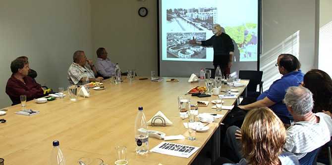

The “Negev Lab” series, launched last year, is continuing in 2018–2019. This series of meetings serves as a forum in which leaders and key figures from the Negev region can engage in shared study and receive inspiration on issues related to local culture and artistic creativity. Led by Dr. Ruth Calderon and Dr. Adi Nir-Sagi, the series provides an opportunity for study and open discussion about the “big picture” in the development of culture and quality of life in the Negev. The event was attended by leading figures from the fields of local government and academia in the Negev, as well as key figures from public institutions in the region and cultural organizations active in the local arts.
The overarching theme of this year’s Negev Lab series is "shadow and desert." At the opening meeting, held on December 14, the architect Michael Rona explored the architecture of light, the architecture of shade, the desert, and the various relationships between them. His talk focused on the development of architecture and planning, both from a historical-social perspective, and from the perspective of the urban and rural uniqueness of desert spaces. Participants discussed various interpretations of the concept of “shadow” and spoke about the activities they are currently leading and the challenges leaders are facing in the Negev. The participants emphasized the importance of the series for promoting thinking about the role of arts and culture in the desert.

{kind=link}
{kind=link}